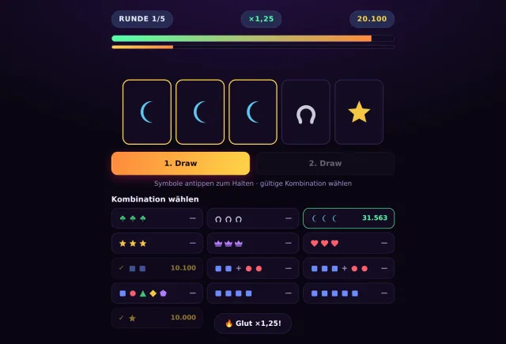
Keep
Ein Automat, fünf Runden, und die Uhr wird jedes Mal knapper.
Drehen, halten, kombinieren. Fünf Runden, die immer kürzer werden – wer die wertvollste Kombination legt, räumt ab.
Neunundzwanzig Browserspiele für 1 bis 20 Leute. Kein Download, kein Account – Link teilen, Namen eintippen, los.
Was hier oben steht, entscheiden die letzten vier Wochen – und es aendert sich nur, wenn ein Spiel deutlich haeufiger aufgemacht wird.

Ein Automat, fünf Runden, und die Uhr wird jedes Mal knapper.
Drehen, halten, kombinieren. Fünf Runden, die immer kürzer werden – wer die wertvollste Kombination legt, räumt ab.
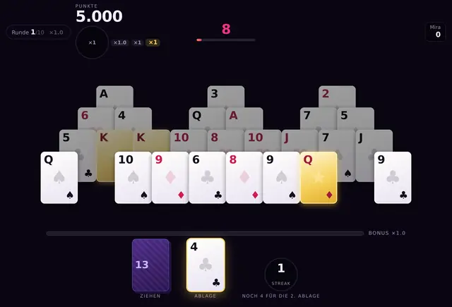
Drei Kartenpyramiden, zehn Runden, und am Ende darfst du zocken.
Drei Pyramiden, ein Timer, zehn Runden. Wer am schnellsten Ketten baut, räumt die Türme ab.
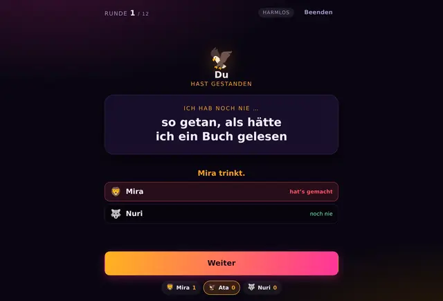
Einer gesteht, der Rest wird ertappt. Das einzige Spiel hier, bei dem geredet statt gedrückt wird.
Das Spiel für die Runde am Tisch: Einer gesteht, alle anderen werden ertappt. Kein Zeitdruck, keine Reaktion – nur reden. Harmlose Karten sind voreingestellt, 18+ schaltet die Runde selbst frei.
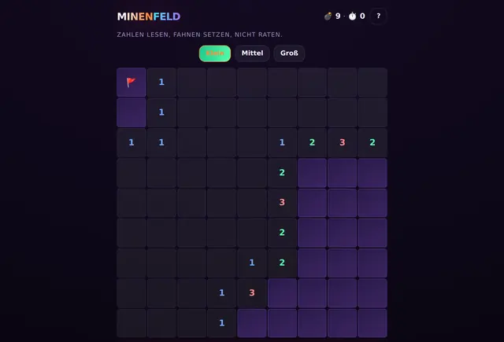
Zahlen lesen, Fahnen setzen, nicht raten. Der erste Klick ist immer sicher.
Der Klassiker, aufs Handy gebracht: tippen deckt auf, langer Druck setzt eine Fahne. Drei Größen, Bestzeit pro Größe. Läuft ganz im Browser, ohne Konto und ohne Server.
Ihr sitzt zusammen und redet; das Handy zählt nur mit. Einer eröffnet einen Raum, die anderen tippen den Code ein.
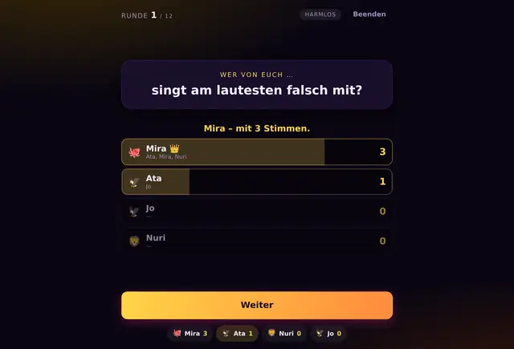
Eine Frage, alle zeigen gleichzeitig. Die Auflösung ist der Gesprächsanlass.
Eine Frage, und alle zeigen gleichzeitig auf eine Person. Aufgedeckt wird erst, wenn jeder gewählt hat – dann zeigen Balken, wer wie oft gemeint war und von wem. Der schnellste Einstieg von allen. Harmlose Fragen sind voreingestellt, 18+ schaltet die Runde selbst frei.
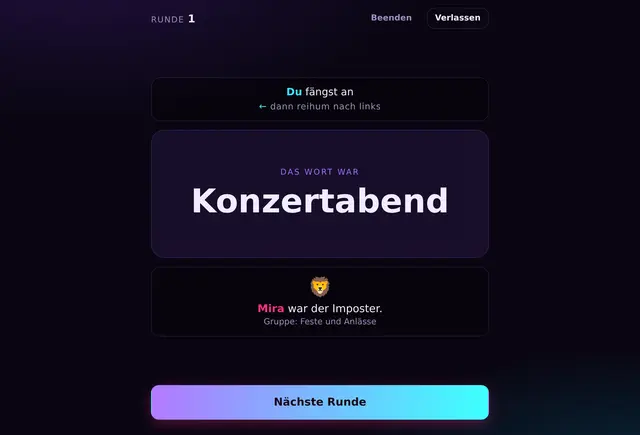
Alle kennen das Wort. Bis auf einen – und der muss so tun, als ob.
Alle bekommen dasselbe Wort – bis auf einen. Das Handy zeigt nur das Wort und teilt sonst nichts ein: reihum reden, aufeinander zeigen und streiten macht ihr am Tisch. In der zweiten Art bekommt jeder ein Wort, aber eines weicht ab – und der, den es trifft, weiß es selbst nicht. Der längste Abend von allen.
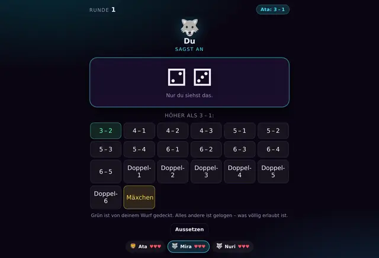
Gewürfelt wird, damit man lügen kann. Zwei Würfel, ein Becher, und nur du siehst darunter.
Zwei Würfel unter dem Becher, und nur du siehst sie. Sag an, was du angeblich hast – höher als der vor dir. Der Nächste glaubt es oder deckt auf. Einer verliert dabei immer ein Leben.
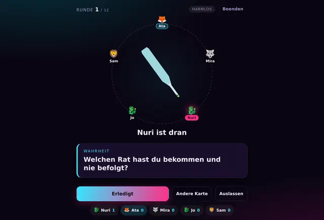
Die Flasche entscheidet, wer dran ist – auf allen Handys gleichzeitig.
Reihum dreht einer die Flasche – sie dreht sich auf allen Bildschirmen gleichzeitig und bleibt bei allen auf derselben Person stehen. Danach Wahrheit oder Pflicht. Oder nur die Flasche, wenn euch das reicht.
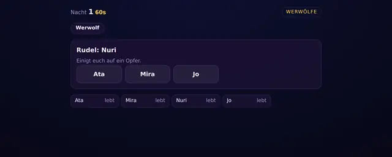
Nachts holen sich die Wölfe einen. Tagsüber redet das Dorf – und irrt sich.
Vier bis zwölf Leute, fünf Rollen: Werwolf, Dorfbewohner, Seherin, Hexe, Amor. Den Erzähler macht der Server, ihr müsst nur reden und euch gegenseitig verdächtigen.
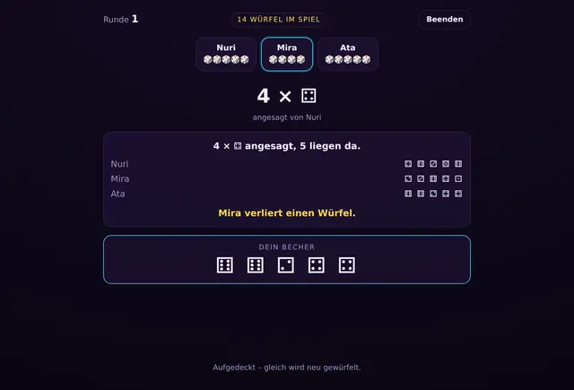
Jeder fünf Würfel unter dem Becher. Geboten wird auf alles, was am Tisch liegen könnte.
Verwandt mit Mäxchen, aber jeder hat seine eigenen Würfel: „vier Fünfen“ heißt, es liegen mindestens vier Fünfen – egal bei wem. Einser sind Joker. Wer nicht glaubt, zweifelt, und einer verliert einen Würfel.
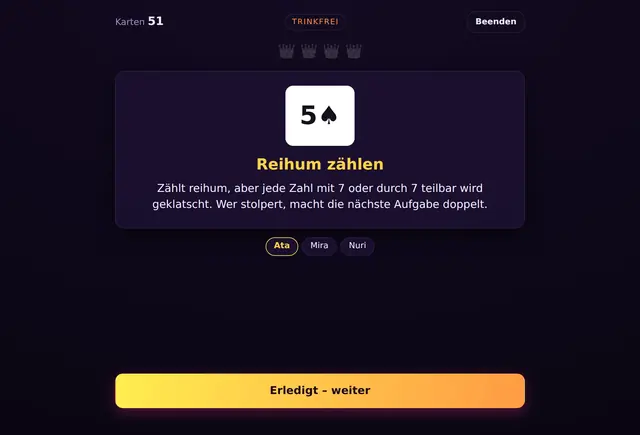
Eine Karte, eine Regel, die ganze Runde macht mit. Trinkfrei voreingestellt.
Reihum zieht einer eine Karte, und alle sehen dieselbe Regel auf ihrem Handy. Voreingestellt ist die trinkfreie Fassung: dieselben Karten, statt Schlucken kleine Aufgaben. Beim vierten König ist Schluss.
Einer ist dran, die anderen überlegen mit. Kein Zeitdruck außer der Bedenkzeit, die ihr selbst einstellt – oder abschaltet.
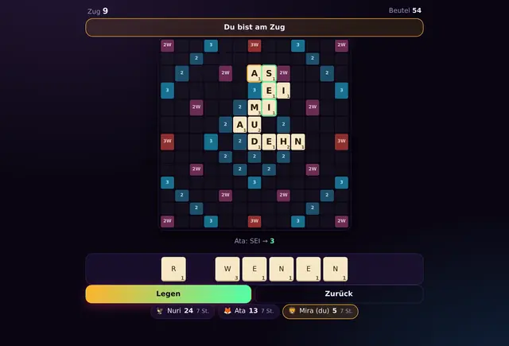
Buchstaben mit Werten auf ein Brett mit Bonusfeldern. Geprüft wird gegen eine Wortliste, nicht gegen die Geduld der Mitspieler.
Sieben Steine auf dem Regal, ein 13×13-Brett mit Bonusfeldern. Legt Wörter, kreuzt die der anderen und nehmt die dreifachen Felder mit, bevor es jemand anders tut.
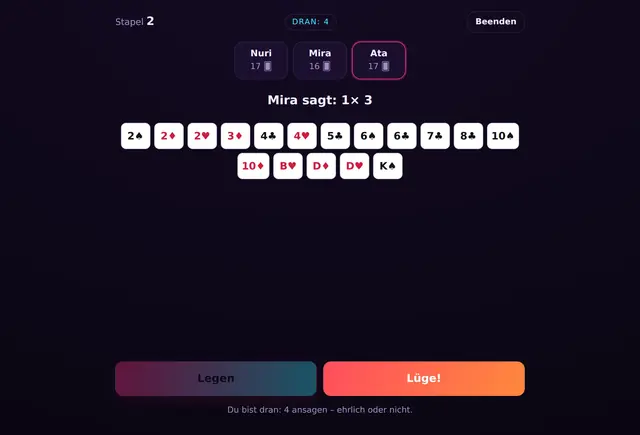
Verdeckt ablegen und ansagen. Wer nicht glaubt, deckt auf – einer nimmt den Stapel.
Das ganze Deck wird verteilt, alle wollen ihre Karten loswerden. Abgelegt wird verdeckt, die Ansage steigt jede Runde um einen Rang. Ob du wirklich drei Achten gelegt hast, sieht niemand.
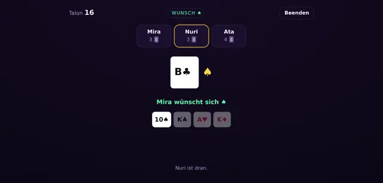
Farbe oder Zahl bedienen. Sieben zieht, Acht setzt aus, Bube wünscht.
Der gemeinfreie Klassiker mit 32 Karten. Welche Sonderregeln gelten, stellt der Host vorher ein – und wer auf eine Karte kommt, muss „Mau“ sagen, sonst kostet es zwei.
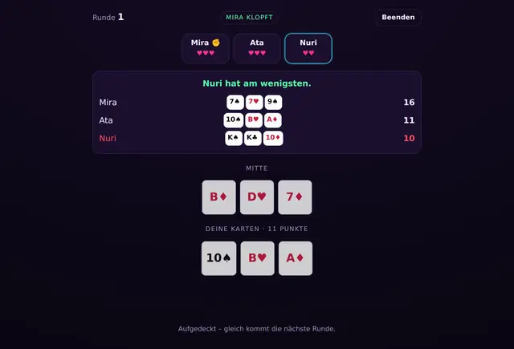
Drei Karten, drei Leben. Wer am wenigsten hat, verliert eins.
31 in einer Farbe, drei Karten auf der Hand, drei offen in der Mitte. Tauschen, schieben oder klopfen – und hoffen, dass jemand anders weniger hat als du.
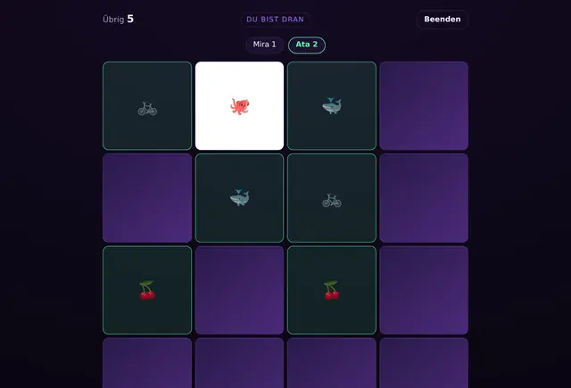
Ein Brett, alle schauen zu, dran ist einer. Wer zwei gleiche findet, darf noch mal.
Das Merkspiel für die Runde: ein gemeinsames Feld, jeder sieht es auf seinem eigenen Handy. Verdeckte Karten kennt auch dein Browser nicht – nachschauen im Quelltext bringt nichts. Acht, fünfzehn oder vierundzwanzig Paare, allein geht es auch.
Karten, Symbole, Reflexe. Kurze Runden, harte Punktestände – jeder mit eigenem Gerät.
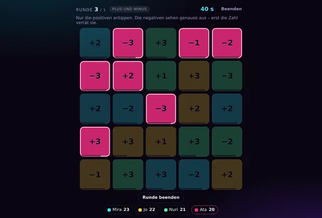
Ein volles Raster, deine Farbe darin. Die der anderen kannst du nicht antippen.
Jeder bekommt eine Farbe. Das Raster ist immer voll und wechselt ständig – triff deine eigenen, bevor sie weg sind. Drei Runden, jede mit einer neuen Gemeinheit.
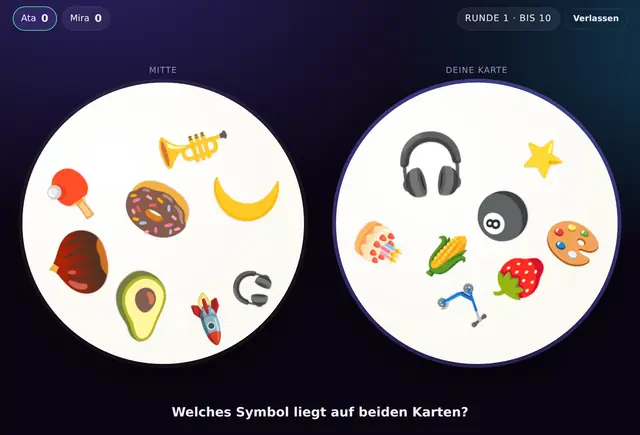
Zwei Karten, immer genau ein gemeinsames Symbol. Finde es zuerst.
Deine Karte und die in der Mitte haben genau ein gemeinsames Symbol. Wer es zuerst antippt, bekommt den Punkt.
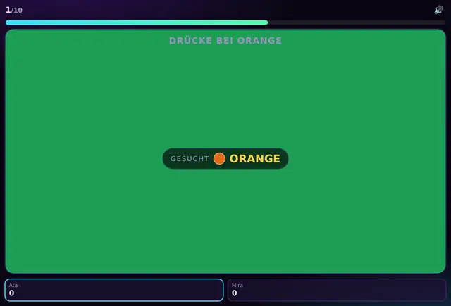
Schnell sein reicht nicht – du musst auch richtig liegen.
Schnell reagieren – aber nur, wenn es stimmt. 17 Rundenarten, Automaten-Walzen und Fallen für alle, die einfach dauerdrücken.
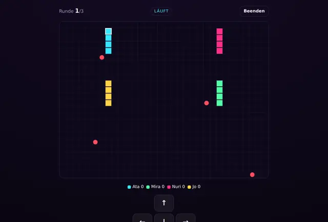
Alle Schlangen auf einem Feld. Die Bewegung läuft auf dem Server, nicht im Handy.
Eine bis sechs Schlangen auf einem gemeinsamen Raster. Äpfel machen länger, Wände und fremde Schwänze sind tödlich. Gewischt wird auf dem eigenen Handy, gerechnet wird zentral – damit alle denselben Zusammenstoß sehen.
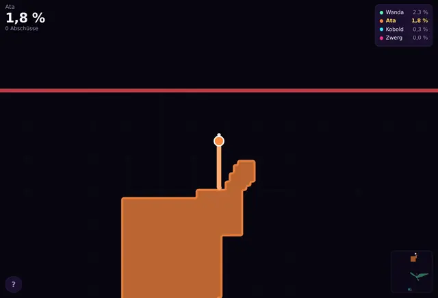
Eine Welt, die nie aufhört. Reingehen und sofort mitfahren – Fläche einkreisen und behalten.
Kein Raum, kein Code, kein Rundenende: Seite auf, und du fährst mit. Außerhalb des eigenen Gebiets ziehst du eine Spur – zurück im Eigenen wird alles Umschlossene deins. Wer eine fremde Spur kreuzt, schaltet sie aus. Der Daumen tippt irgendwohin, und genau dort sitzt der Joystick.
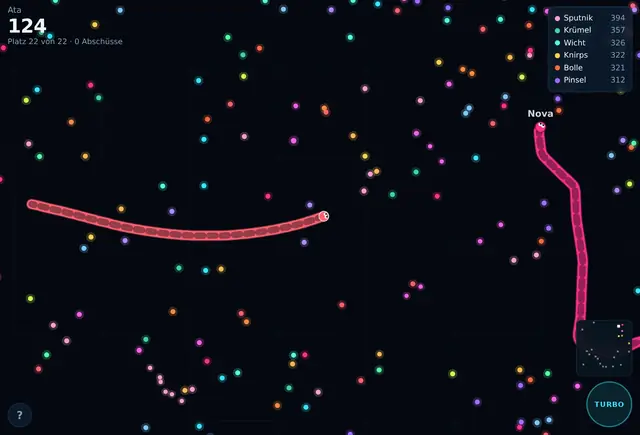
Energie sammeln, wachsen, niemandem in den Weg kriechen. Die Welt läuft immer.
Anmelden und sofort mitkriechen: überall liegen Energiebälle, jeder macht dich länger und dicker. Fährst du in einen anderen hinein, zerfällst du zu Energie – er nicht. Zweiter Finger gibt Turbo, fast dreimal so schnell und entsprechend teuer. Nach oben ist nichts zugemacht.
Kein Raum, kein Code, niemand, den man erst überreden muss. Die Rätselspiele laufen ganz im Browser und brauchen keine Verbindung mehr, sobald die Seite geladen ist; Ameisen und Glückspilz dagegen laufen immer weiter, weil dein Bau und dein Konto auf dem Server liegen.
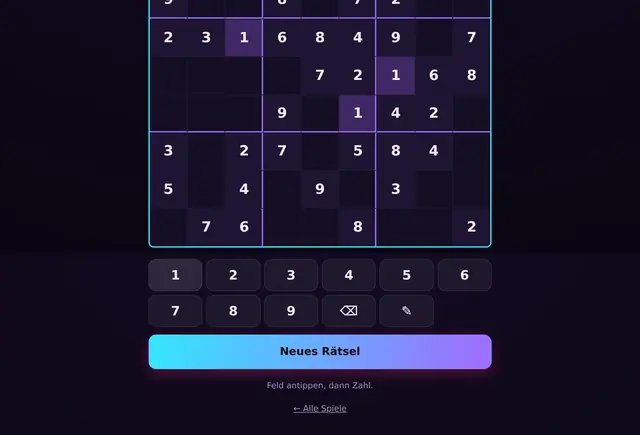
Neun mal neun, drei Stufen – und jedes Rätsel hat genau eine Lösung.
Der Generator baut jedes Rätsel frisch und zählt beim Aushöhlen nach: findet der Löser zwei Lösungen, kommt die Zahl zurück. Raten ist also nie nötig. Mit Notizmodus, Fehleranzeige und Bestzeit.
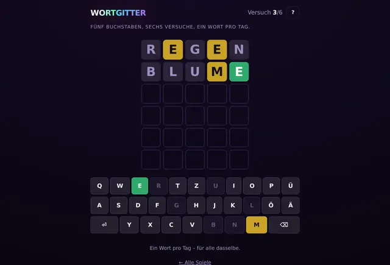
Fünf Buchstaben, sechs Versuche, ein Wort pro Tag – für alle dasselbe.
Grün heißt richtig, gelb heißt woanders, grau heißt gar nicht. Geprüft wird gegen dieselbe CC0-Wortliste wie bei Wortleger; gelöst wird nur mit Wörtern, die man auch kennt. Serie und Statistik bleiben in deinem Browser.
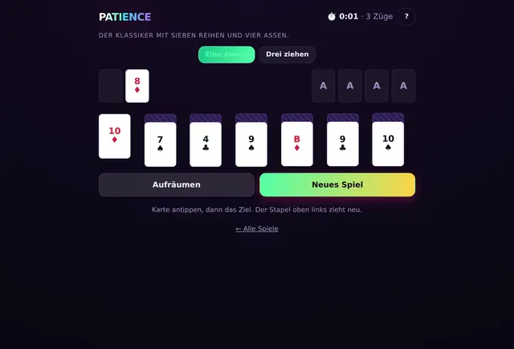
Klondike mit sieben Reihen und vier Assen. Antippen statt ziehen.
Der Solitär-Klassiker, so gebaut, dass er auf dem Handy funktioniert: erst die Karte antippen, dann das Ziel – Drag & Drop trifft in einer Kartenspalte niemand. Eine oder drei Karten ziehen, „Aufräumen“ für den Schluss.
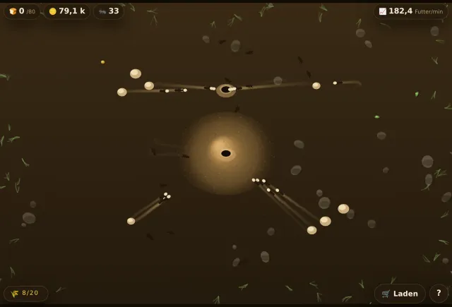
Krümel hinwerfen und zusehen, wie sie gefunden und heimgetragen werden. Läuft weiter, wenn du weg bist.
Ein Hügel im Sand, ein Volk, das ausschwärmt. Du wirfst Futter dazwischen, die Ameisen suchen es, finden es und tragen es heim – und wer trägt, legt eine Duftspur, der die anderen nachlaufen. Aus einem Fund wird so nach kurzer Zeit eine Straße. Unten im Bau wird kleingemacht, daraus kommen Münzen, und die gehören in den Laden: mehr Ameisen, stärkere Kiefer, ein zweiter Ausgang. Dein Bau bleibt dir und arbeitet weiter, während du nicht hinsiehst.
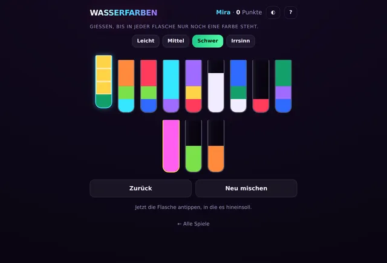
Farbige Schichten von Flasche zu Flasche gießen, bis jede nur noch eine Farbe hat. Das Water-Sort-Puzzle.
Vier bis zwölf Farben, in Flaschen durcheinandergeschichtet. Gegossen werden darf nur Gleiches auf Gleiches, und über den Rand geht nie etwas: passt nur die Hälfte, bleibt der Rest stehen. Klingt einfach und ist es in der leichten Stufe auch – bei zwölf Farben und zwei freien Flaschen sortiert man eine Weile. Jede Mischung ist nachweislich lösbar: der Erzeuger löst sie selbst, bevor du sie siehst. Name und Punkte bleiben im Browser.
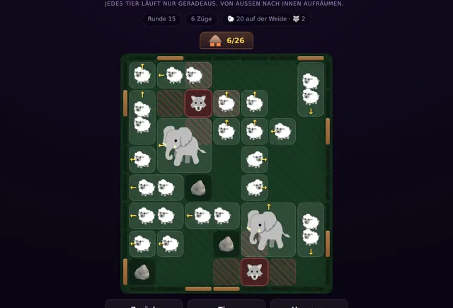
Eine Weide voller Tiere, die sich gegenseitig im Weg stehen. Antippen, laufen lassen, schieben – bis alle im Stall sind.
Jedes Tier schaut in eine Richtung und läuft nur dorthin: bis vor das nächste Hindernis oder ganz aus der Weide hinaus. Damit räumt man von außen nach innen ab – und schiebt, wo es sein muss. Zwei Schafe laufen im Gespann, ein Elefant nimmt einen Viererblock ein und braucht zwei freie Bahnen nebeneinander. Der Wolf rührt sich nie vom Fleck, aber er schnappt nach allem, was in seiner Reichweite stehen bleibt – vorbeilaufen ist ungefährlich. Rückwärts läuft keins, also kann man sich festfahren: dafür gibt es Zurück und Von vorn, beides ohne Punktabzug. Jede Weide ist nachweislich zu räumen, mit einem Zug je Tier – genau dafür gibt es drei Sterne. Punkte, Runde und Sterne bleiben unter deinem Namen im Browser; mehrere Leute können sich ein Gerät teilen.
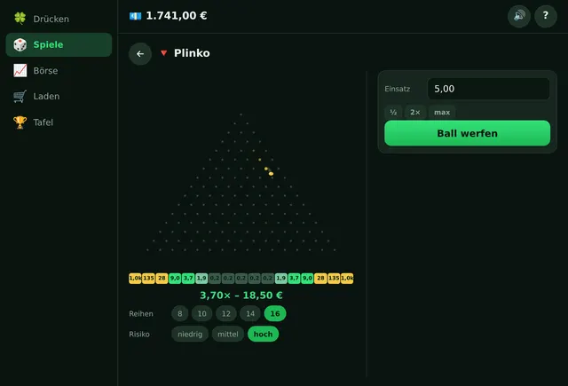
Ein Spielgeld-Kasino, in dem Geld nur an einem Knopf entsteht: ein Cent je Druck. Elf Glücksspiele und eine erfundene Börse nehmen es dir wieder ab.
Hier läuft kein echtes Geld – es gibt keine Einzahlung, keine Auszahlung und nichts, was man mitnehmen könnte. Alles fängt an einem großen grünen Knopf an: ein Druck, ein Cent. Wer schnell drückt, hält die Schwungleiste oben und bekommt mehr; im Laden gibt es Stufen zu kaufen, deren Preis sich mit jeder verdreifacht, damit der Knopf nie überflüssig wird. Über Nacht sammelt sich ein kleiner Betrag an. Das Verdiente kann man dann in elf Glücksspielen verzocken – Plinko, Mines, Crash, Dice, Limbo, Drachenturm, Flip, Diamanten, Bars, Keno, Fallobst – oder an einer Börse mit acht erfundenen Firmen, deren Kurse Trends, ruhige und wilde Phasen und Nachrichten kennen. Dort lässt sich der Hebel bis auf das Hundertfache stellen; fällt der Wert auf null, ist die Position weg, auch wenn gerade niemand hinsieht. Die Auszahlungsquote liegt überall knapp unter 97 %, und jeder einzelne Wurf lässt sich hinterher nachrechnen: der Hash der Server-Saat steht vorher da. Ein Konto mit Namen und Passwort gehört dazu – ohne wäre der Spielstand nach dem nächsten geleerten Browser weg.